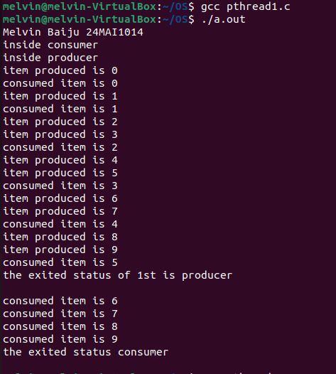

Overview
The Producer-Consumer Problem is a classic synchronization problem in computer science that illustrates the challenges of managing shared resources between concurrent processes. Here's a brief overview of how it works:
Scenario
- Producer: This process generates data and adds it to a shared buffer.
- Consumer: This process takes data from the shared buffer and processes it.
Shared Buffer
The buffer has a limited size and acts as a storage area where the producer can place items and the consumer can retrieve them. The buffer can be implemented as a queue, with the producer adding items to the end and the consumer removing items from the front.
Synchronization Issues
- Buffer Overflow: If the producer tries to add an item to a full buffer, it must wait until there is space available.
- Buffer Underflow: If the consumer tries to remove an item from an empty buffer, it must wait until there are items available.
Solutions
To solve the synchronization issues, mechanisms such as semaphores, mutex locks, and condition variables are used:
- Semaphores: Two semaphores are typically used—one to count the number of available slots in the buffer (
empty) and one to count the number of items in the buffer (full). This ensures that the producer and consumer operate in a synchronized manner. - Mutex Locks: A mutex (mutual exclusion) lock is used to ensure that only one process (either producer or consumer) accesses the buffer at a time, preventing race conditions.
- Condition Variables: These are used to block a process (producer or consumer) until a certain condition (like buffer not full for producer, buffer not empty for consumer) is met.
Producer-Consumer Problem Pseudocode
//Pseudocode for Producer-Consumer Problem
semaphore empty = BUFFER_SIZE; // Initially, all slots are empty
semaphore full = 0; // Initially, no items in the buffer
mutex buffer_mutex;
Producer() {
while (true) {
produce_item(); // Generate an item
wait(empty); // Decrement the empty semaphore
wait(buffer_mutex); // Acquire the mutex lock
add_item_to_buffer(); // Add the item to the buffer
signal(buffer_mutex); // Release the mutex lock
signal(full); // Increment the full semaphore
}
}
Consumer() {
while (true) {
wait(full); // Decrement the full semaphore
wait(buffer_mutex); // Acquire the mutex lock
remove_item_from_buffer(); // Remove the item from the buffer
signal(buffer_mutex); // Release the mutex lock
signal(empty); // Increment the empty semaphore
consume_item(); // Process the item
}
}
Producer-Consumer Problem Code
#include <stdio.h>
#include <limits.h>
#include <pthread.h>
#include <unistd.h>
#include <stdlib.h>
#include <semaphore.h>
#include <string.h>
sem_t empty, full, mutex;
char buf[10];
void* producer(void* arg) {
int i;
printf("inside producer\n");
for (i = 0; i < 10; i++) {
sem_wait(&empty);
sem_wait(&mutex);
buf[i] = i;
printf("item produced is %d\n", buf[i]);
sem_post(&mutex);
sem_post(&full);
sleep(1);
}
pthread_exit("producer\n");
}
void* consumer(void* arg) {
int j;
printf("inside consumer\n");
for (j = 0; j < 10; j++) {
sem_wait(&full); // Wait on full
sem_wait(&mutex); // Wait on mutex
j = buf[j];
printf("consumed item is %d\n", buf[j]);
sem_post(&mutex); // Signal mutex
sem_post(&empty); // Signal empty
sleep(2);
}
pthread_exit("consumer\n");
}
int main() {
pthread_t pid1, pid2;
sem_init(&empty, 0, 10);
sem_init(&full, 0, 0);
sem_init(&mutex, 0, 1); // Corrected the third parameter to 0
printf(“Melvin Baiju 24MAI1014 \n”);
void* status;
pthread_create(&pid1, NULL, producer, NULL); // Create producer thread
pthread_create(&pid2, NULL, consumer, NULL); // Create consumer thread
pthread_join(pid1, &status);
printf("the exited status of 1st is %s\n", (char*)status);
pthread_join(pid2, &status);
printf("the exited status %s\n", (char*)status);
return 0;
}
Sample Input
Buffer Size: 5
Producer's Items: Item1, Item2, Item3, Item4, Item5, Item6, Item7
Consumer's Actions: Consume one item at a time whenever an item is available.
Producer Actions:
Produce Item:1
Produce Item:2
Produce Item:3
Produce Item:4
Produce Item:5
Produce Item:6 (wait since the buffer is full)
Produce Item:7 (wait since the buffer is full)
Consumer Actions:
Consume Item:1
Consume Item:2
Consume Item:3
Consume Item:4
Consume Item:5
Consume Item:6 (producer resumes and adds it to buffer)
Consume Item:7 (producer resumes and adds it to buffer)
Sample Output
